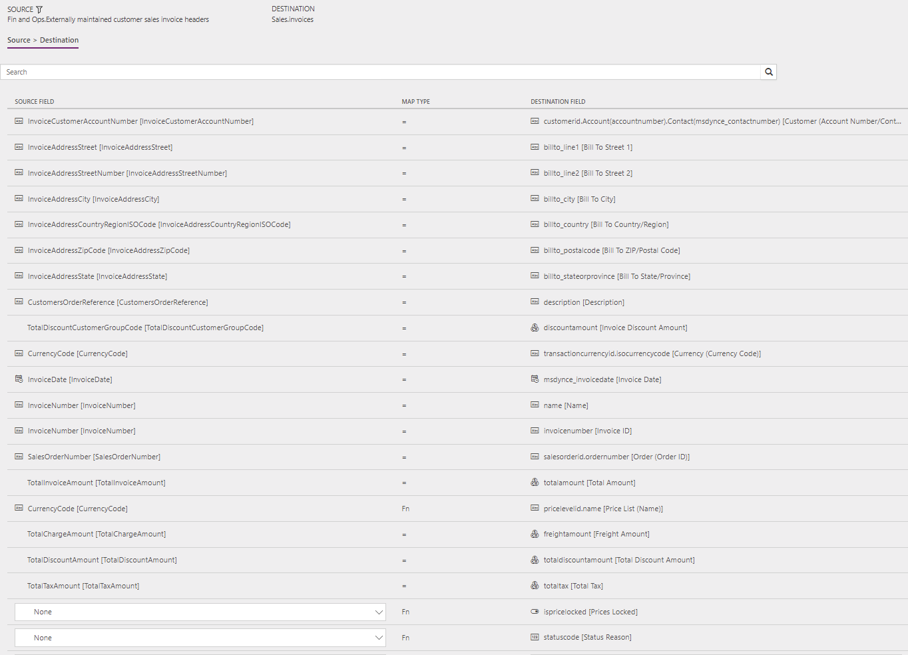
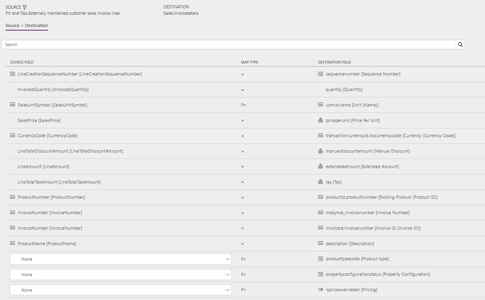

Verkaufsrechnungskopfzeilen und -positionen direkt von Finance and Operations aus mit Sales synchronisieren
Important
Dynamics 365 for Finance and Operations hat sich zu speziell entwickelten Anwendungen entwickelt, mit denen Sie bestimmte Geschäftsfunktionen verwalten können. Weitere Informationen zu diesen Änderungen finden Sie im Dynamics 365-Lizenzierungshandbuch.
Das Thema erklärt die Vorlagen und die zugrunde liegenden Aufgaben, die verwendet werden, um Rechnungskopfzeilen und -positionen direkt aus Dynamics 365 Supply Chain Management zu Dynamics 365 Sales zu synchronisieren.
Datenfluss in Interessent nach Bargeld
Die Lösung Interessent nach Bargeld verwendet die Datenenintegrationsfunktion, um Daten über Instanzen von Supply Chain Management und Sales hinweg zu synchronisieren. Die „Interessent zu Bargeld”-Vorlagen, die über die Datenintegrationsfunktion verfügbar sind, ermöglichen den Fluss von Konten, Kontakten, Produkten, Verkaufsangeboten, Aufträgen und Verkaufsrechnungen zwischen Supply Chain Management und Sales. Die folgende Abbildung zeigt, wie Daten zwischen Supply Chain Management und Sales synchronisiert werden.

Vorlagen und Aufgaben
Um auf die verfügbaren Vorlagen zuzugreifen, öffnen Sie Power Apps-Administrator-Center. Wählen Sie Projekte, und dann auf, in der oberen rechten Ecke, wählen Sie Neues Projekt, um öffentliche Vorlagen auszuwählen.
Die folgende Vorlage und die zugrunde liegenden Aufgaben werden verwendet, um Rechnungskopfzeilen und -positionen aus Supply Chain Management mit Sales zu synchronisieren:
Name der Vorlage in der Datenintegration: Verkaufsrechnungen (Finance and Operations zu Sales) - direkt
Namen der Aufgaben im Datenintegrationsprojekt:
- SalesInvoiceHeader
- SalesInvoiceLine
Die folgenden Synchronisierungsaufgaben sind erforderlich, bevor die Synchronisierung von Rechnungskopfzeilen und -positionen erfolgen kann:
- Produkte (Supply Chain Management zu Sales) – Direkt
- Konten (Sales zu Supply Chain Management) – Direkt (falls verwendet)
- Kontakte (Sales zu Supply Chain Management) – Direkt (falls verwendet)
- Auftragskopf und -positionen (Supply Chain Management zu Sales) – Direkt
Entitätssatz
| Lieferkettenverwaltung | Verk. |
|---|---|
| Extern gepflegte Debitorenverkaufsrechnungs-Kopfzeilen | Rechnungen |
| Extern gepflegte Debitorenverkaufsrechnungs-Positionen | InvoiceDetails |
Entitätsfluss
Verkaufsrechnungen werden in Supply Chain Management erstellt und mit Sales synchronisiert.
Note
Die Steuer für Belastungen auf dem Verkaufsrechnungskopf ist derzeit nicht in der Synchronisierung von Supply Chain Management mit Sales enthalten. Sales unterstützt keine Steuerinformationen auf Kopfebene. Allerdings sind Steuern, die den Belastungen auf Positionsebene zugeordnet sind, in die Synchronisierung einbezogen.
Prospect to Cash-Lösung für Sales
- Ein Feld Rechnungsnummer wurde zur Entität Rechnung hinzugefügt und wird auf der Seite angezeigt.
- Die Schaltfläche Rechnung erstellen auf der Seite Auftrag ist ausgeblendet, da Rechnungen in Supply Chain Management erstellt und mit Sales synchronisiert werden. Die Seite Rechnung kann nicht geändert werden, da Rechnungen über Supply Chain Management synchronisiert werden.
- Der Auftragsstatus-Wert wird automatisch in Fakturiert geändert, wenn die zugehörige Rechnung aus Supply Chain Management mit Sales synchronisiert wurde. Darüber hinaus wird der Eigentümer des Auftrags, aufgrund dessen die Rechnung erstellt wurde, als Eigentümer der Rechnung zugewiesen. Daher kann der Besitzer des Auftrags die Rechnung anzeigen.
Voraussetzungen und Einrichtung der Zuordnung
Vor dem Synchronisieren von Rechnungen müssen die Systeme mit den folgenden Einstellungen synchronisiert werden:
Einrichtung in Sales
Gehen Sie zu Einstellungen > Verwaltung > Systemeinstellungen > Sales, und überprüfen Sie, ob die folgenden Einstellungen verwendet werden:
- Die Option Systempreisberechnungssystem verwenden wird auf Ja festgelegt.
- Das Feld Rabattberechnungsmethode wird auf Positionsartikel festgelegt.
Einrichtung im Datenenintegrationsprojekt
SalesInvoiceHeader-Aufgabe
Vergewissern Sie sich, dass die erforderliche Zuordnung für InvoiceCountryRegionId zu BillingAddress_Country vorhanden ist.
Der Vorlagenwert ist eine Wertzuordnung, in der verschiedene Länder/Regionen zugeordnet sind.
Preisliste ist erforderlich, um Rechnungen in Sales zu erstellen. Aktualisieren Sie die Wertzuordnung für pricelevelid.name [Price list name] auf die Preisliste, die in Sales pro Währung verwendet wird. Sie können die Standardpreisliste für eine einzelne Währung verwenden. Alternativ können Sie, wenn Sie Preislisten in mehreren Währungen haben, eine Zuordnung verwenden.
Der Vorlagenwert für pricelevelid.name [Price list name] ist ein Wertzuordnung, die auf Währung mit USD = CRM Service USA (Beispiel) basiert.
SalesInvoiceLine-Aufgabe
Vergewissern Sie sich, dass die erforderliche Zuordnung für Maßeinheit vorhanden ist.
Stellen Sie sicher, dass die erforderliche Wertzuordnung für SalesUnitSymbol in Supply Chain Management vorhanden ist.
Ein Vorlagenwert, der eine Wertzuordnung hat, wird für SalesUnitSymbol als Quantity_UOM definiert.
Vorlagenzuordnung in Datenintegration
Note
Die Felder Zahlungsbedingungen, Frachtbedingungen, Lieferbedingungen, Liefermethode und Bereitstellungsmodus sind nicht in den Standardzuordnungen enthalten. Um diese Feldern zuzuordnen, müssen Sie eine Wertzuordnung einrichten, die spezifisch für die Daten in den Organisationen ist, zwischen denen die Entität synchronisiert wird.
Die folgenden Abbildungen zeigen ein Beispiel für eine Vorlagenzuordnung in Datenintegration.
Note
Die Zuordnung zeigt, welche Feldinformationen von Sales zu Supply Chain Management synchronisiert werden.
SalesInvoiceHeader

SalesInvoiceLine

Verwandte Themen
Konten direkt von Sales mit Konten in Supply Chain Management synchronisieren
Produkte direkt von Supply Chain Management mit Produkten in Sales synchronisieren
Kontakte direkt von Sales mit Kontakten oder Debitoren in Supply Chain Management synchronisieren
Synchronisieren von Aufträgen direkt zwischen Sales und Supply Chain Management